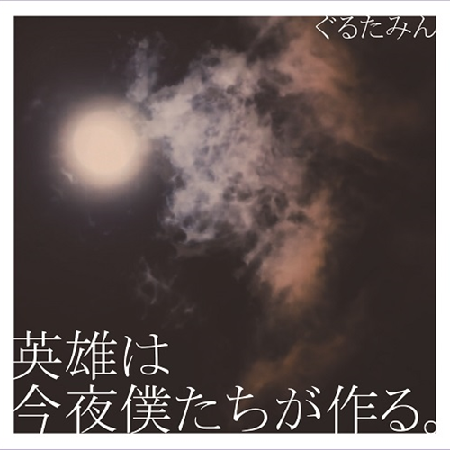

| New Release | ||
|---|---|---|
| New single『英雄は今夜僕たちが作る。』긴급 발매 결정 | ||
|  | 포맷 | CD MAXI |
| 라벨 | Universal-W | |
| 발매원 | ユニバーサル ミュージック合同会社 | |
| 발매 국가 | 일본 | |
| 상품 소개 |
|---|
| New single 긴급 발매 결정 |
| 싱어송 라이터 구루타밍이 연말인 12월 27일 New single을 발매. 이번 작품의 테마는 "믿어주는 것이 무엇보다 힘이된다"라는 테마. 수록곡 전체 작품이 자신의 작사 작곡에 의한 오리지널이다. |
| 곡 목록 | ||
|---|---|---|
| 1 | 英雄は今夜僕たちが作る。 | |
| 2 | 8億個の大嫌い | |
| 3 | リクオミオ | |
| 4 | 英雄は今夜僕たちが作る。 (Instrumental) | |
| 5 | 8億個の大嫌い (Instrumental) | |
| 6 | リクオミオ (Instrumental) |